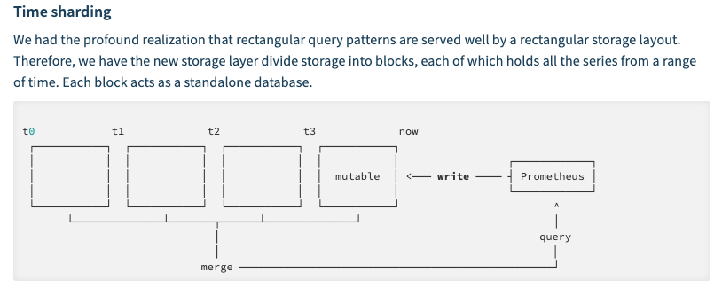
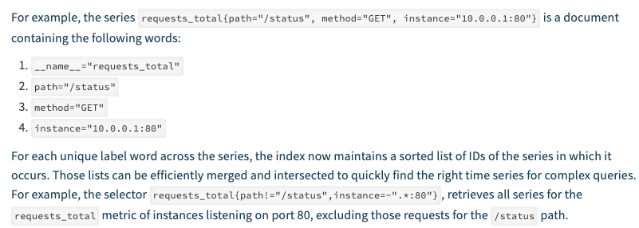

技术002KPromethus
技术002KPromethus¶
参数解读&存储实现原理¶
Time sharding 
Index 将指标拆分成倒排索引（inverted index concept） 倒排索引 
监控数据在磁盘的存储形式
Prometheus 按照两个小时为一个时间窗口，将两小时内产生的数据存储在一个块（Block）中。每个块都是一个单独的目录，里面含该时间窗口内的所有样本数据（chunks），元数据文件（meta.json）以及索引文件（index）。其中索引文件会将指标名称和标签索引到样板数据的时间序列中。此期间如果通过 API 删除时间序列，删除记录会保存在单独的逻辑文件 tombstone 当中。
当前样本数据所在的块会被直接保存在内存中，不会持久化到磁盘中。为了确保 Prometheus 发生崩溃或重启时能够恢复数据，Prometheus 启动时会通过预写日志（write-ahead-log(WAL)）重新记录，从而恢复数据。预写日志文件保存在 wal 目录中，每个文件大小为 128MB。wal 文件包括还没有被压缩的原始数据，所以比常规的块文件大得多。一般情况下，Prometheus 会保留三个 wal 文件，但如果有些高负载服务器需要保存两个小时以上的原始数据，wal 文件的数量就会大于 3 个。
最初两个小时的块最终会在后台被压缩成更长的块。 [info] 注意
本地存储不可复制，无法构建集群，如果本地磁盘或节点出现故障，存储将无法扩展和迁移。因此我们只能把本地存储视为近期数据的短暂滑动窗口。如果你对数据持久化的要求不是很严格，可以使用本地磁盘存储多达数年的数据。
prlimit调整prometheus的fd数目
容量规划¶
抓取间隔越大，数据越稀疏；抓取间隔越小，监控数据的时间分辨率越高，但所需的存储资源会增多。建议将该值设置在 5s ~ 15s 之间。 1.{{}}可以取自定义的变量,$取环境变量 2.rule的语法检测步骤 go get github.com/prometheus/prometheus/cmd/promtool promtool check rules /path/to/example.rules. 3.query curl promql
curl -s http://10.120.16.13:9090/api/v1/query?query=container_cpu_usage_seconds_total | jq
curl http://10.120.16.13:9090/api/v1/targets显示默认的label
https://prometheus.io/docs/prometheus/latest/querying/api/#expression-query-result-formats 通过api来获取prom相关数据信息
4，prom的一些命令参数 从2.0开始 –web.enable-lifecycle允许动态加载prom的配置 if o.EnableLifecycle { router.Post(“/-/quit”, h.quit) router.Put(“/-/quit”, h.quit) router.Post(“/-/reload”, h.reload) router.Put(“/-/reload”, h.reload) } func (h Handler) quit(w http.ResponseWriter, rhttp.Request) { fmt.Fprintf(w, “Requesting termination… Goodbye!”) close(h.quitCh) } func (h Handler) reload(w http.ResponseWriter, rhttp.Request) { rc := make(chan error) h.reloadCh <- rc if err := <-rc; err != nil {
http.Error(w, fmt.Sprintf(“failed to reload config: %s”, err), http.StatusInternalServerError)
} } 5..prometheus 需要两个接口做join操作，可以通过on同一个字段，group_right引入新的字段来实现。 https://github.com/prometheus/prometheus/issues/2670
https://medium.com/@amimahloof/kubernetes-promql-prometheus-cpu-aggregation-walkthrough-2c6fd2f941eb
最终实现公式如下所示：
max(kube_pod_info{namespace=“n***a*m***e*s***p*a***c*e”,p***o*d= “pod”}) by (namespace,pod,pod_ip) * on(pod)
group_right(pod_ip) label_replace(
(sum(rate(container_cpu_usage_seconds_total{namespace=“n***a*m***e*s***p*a***c*e”,p***o*d***na*m***e= “pod”, container!=“filebeat”}[1m])) by (pod_name)) / (sum(container_spec_cpu_quota{namespace=“*n***a*m***e*s***p*a***c*e”,p**o***d*na***m*e= “pod”, container!=“filebeat”}) by (pod_name) /100000)100,“pod”,“1”,“pod_name”,“(.+)”) max(kube_pod_info{namespace=“namespace”, pod=~“pod”}) by (namespace,pod,pod_ip) on(pod) group_right(pod_ip) label_replace( (sum(container_memory_rss{namespace=“namespace”, pod_name=~“pod”, container!=“filebeat”}) by(pod_name) / sum(container_spec_memory_limit_bytes{namespace=“namespace”, pod_name=~“$pod”, container!=“filebeat”}) by(pod_name) * 100),“pod”,“$1”,“pod_name”,“(.+)”)
max(kube_pod_info{namespace=“n***a*m***e*s***p*a***c*e”,p***o*d= “pod”}) by (namespace,pod,pod_ip) * on(pod)
group_right(pod_ip) label_replace(
rate(container_network_receive_bytes_total{namespace=“n***a*m***e*s***p*a***c*e”,*podnam**e*= “pod”}[1m]),“pod”,“$1”,“pod_name”,“(.+)”)
max(kube_pod_info{namespace=“n***a*m***e*s***p*a***c*e”,p***o*d= “pod”}) by (namespace,pod,pod_ip) * on(pod)
group_right(pod_ip) label_replace(
sum(kube_pod_container_resource_limits_cpu_cores{namespace=“n***a*m***e*s***p*a***c*e”,p***o*d= “pod”, container!=“filebeat”}) by (pod),“pod”,“$1”,“pod_name”,“(.+)”)
max(kube_pod_info{namespace=“n***a*m***e*s***p*a***c*e”,p***o*d= “pod”}) by (namespace,pod,pod_ip) * on(pod)
group_right(pod_ip) label_replace(
sum(kube_pod_container_resource_limits_memory_bytes{namespace=“n***a*m***e*s***p*a***c*e”,p***o*d= “pod”, container!=“filebeat”}) by (pod),“pod”,“$1”,“pod_name”,“(.+)”)
指标存放位置 kube
container_cpu_usage_seconds_total{container_name=“POD”,cpu=“total”,,image=“docker2.yidian.com:5000/devops/pause:3.1”,instance=“10.126.53.9”,job=“kubernetes-cadvisor”,name=“k8s_POD_online-feedback-receiver-prod-1-d468dc8c8-9hjh4_dataplatform_033bc899-d2dc-11e9-82c1-1402ec8225a4_0”,namespace=“dataplatform”,pod_name=“online-feedback-receiver-prod-1-d468dc8c8-9hjh4”}
container_name等于POD的是pause容器
报警¶
钉钉¶
./prometheus-webhook-dingtalk –ding.profile=‘webhook1=https://oapi.dingtalk.com/robot/send?access_token=89066027a7c9f112ac9ecb21d716d9a1bd000b3cc42a19453467373593fdfe49’
curl -l -H "Content-type: application/json" -X POST -d '{"msgtype":"markdown","markdown":{"title":"title","text":"text\n> 监控描述信息\n\n> ###### 告警时间 \n"},"at":{"atMobiles":["18811756877"],"isAtAll":true}}' https://oapi.dingtalk.com/robot/send?access_token=89066027a7c9f112ac9ecb21d716d9a1bd000b3cc42a19453467373593fdfe49 curl 'https://oapi.dingtalk.com/robot/send?access_token=89066027a7c9f112ac9ecb21d716d9a1bd000b3cc42a19453467373593fdfe49' \ -H 'Content-Type: application/json' \ -d '{ "msgtype": "text", "text": { "content": "我就是我, 是不一样的烟火" }, "at": { "atMobiles": [ "18811756877" ], "isAtAll": false } }'
docker run -p 8060:8060 timonwong/prometheus-webhook-dingtalk:latest /bin/prometheus-webhook-dingtalk –ding.profile=‘webhook1=https://oapi.dingtalk.com/robot/send?access_token=89066027a7c9f112ac9ecb21d716d9a1bd000b3cc42a19453467373593fdfe49’
Trouble¶
promethus内存异常
promethus的的内存消耗大概60G左右，物理机的内存是64G，影响了物理机上的其他业务，平时占用内存就是5.4G，导致内存增加的原因是因为调用remote write写，remote write提示Error sending samples to remote storage” count=100 err=“Post http://10.136.160.40:8080/receive: dial tcp 10.136.160.40:8080: connect: connection timed out”导致内存增加，增加了大概60G
promethus v1可以限制通过一下配置限制内存，v2不可以 –storage.local.target-heap-size=26214400(25G)
storage.local.target-heap-size用来控制heap的大小，由于Prometheus 2.0引入了一个新的存储引擎，所以v1中的-storage.local.*指标都已经被移除了